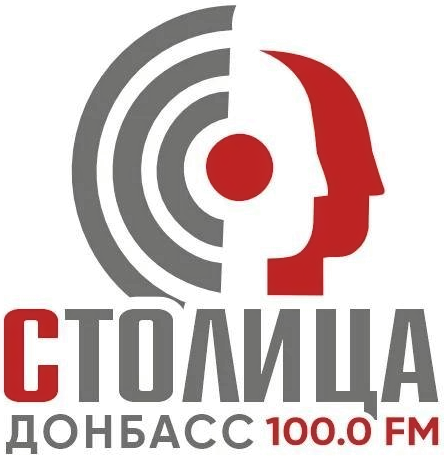
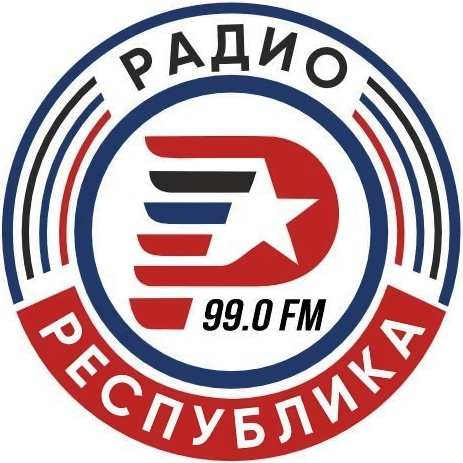
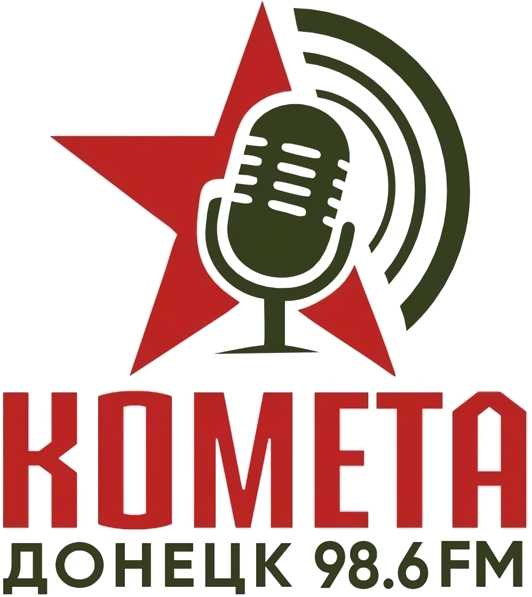
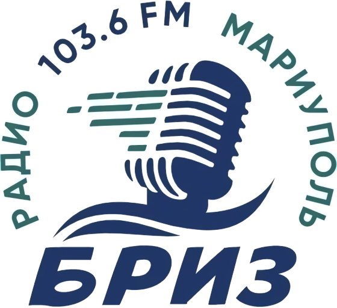

Государственное унитарное предприятие Донецкой Народной Республики «Республиканский меди
холдинг» (ГУП ДНР «РМХ») — официальный сайт


Радио «Столица Донбасс»
Подробнее

Формат вещания:
только любимые хиты и проверенные временем композиции. Утреннее шоу, свежие новости, актуальные интервью.
только любимые хиты и проверенные временем композиции. Утреннее шоу, свежие новости, актуальные интервью.
Начало вещания:
20 января 2018 года.
20 января 2018 года.
Частоты вещания:
Донецк - 100.00 FM
Тельманово - 93.1 FM
Васильевка - 96.1 FM
Дитровка - 97.2 FM
Новоазовск - 100.9 FM
Столица - это не только музыка, это хорошее настроение, насыщенный эфир Утреннее шоу, свежие новости, актуальные интервью!
А ещё, Столица - это множество проектов вместе с вами: Радиофестиваль КАРАОКЕ, тематические Марафоны к праздникам, живые концерты, подарки для самых активных, и даже предложение руки и сердца, - и все это, в прямом эфире! Поэтому, День рождения радиостанции — это повод поблагодарить наших слушателей за то, что они помогают делать наш эфир живым и интересным
Формат вещания:
только любимые хиты и проверенные временем композиции. Утреннее шоу, свежие новости, актуальные интервью и интерактив с слушателями.
Контакты для рекламы:
короткий номер 32-118 с мобильного оператора «Феникс»
Социальные сети:

Радио «Республика Донбасс»
Подробнее
Формат вещания:
обстановка в Республике и на фронте, внутренняя политика и экономика, восстановление региона, события в Россий и на постсоветском пространстве.
обстановка в Республике и на фронте, внутренняя политика и экономика, восстановление региона, события в Россий и на постсоветском пространстве.
Начало вещания:
14 апреля 2014 года.
14 апреля 2014 года.
Частоты вещания:
Донецк 99.00 FM
Новоазовск 96.8 FM
Старобешевский район 100.5 FM
Радио «Республика Донбасс» – первое независимое средство массовой информации Донецкой Народной Республики. Республика - начала свое вещание из Дома Правительства, передавая достоверную информацию о событиях, происходящих в Донбассе. Радиостанция освещала подготовку к Референдуму 11 мая 2014 года, выборы Главы Республики, сводки о боевых действиях стали ежедневной частью эфира.
Радио «Республика Донбасс» сегодня – это первая и единственная информационная радиостанция ДНР. Это актуальные новости о событиях в Республике и Мире, специальные репортажи, авторские информационные, общественно-политические, познавательные программы, эксклюзивные интервью.
Формат вещания:
обстановка в Республике и на фронте, внутренняя политика и экономика, восстановление региона, события в Россий и на постсоветском пространстве.
Телефон рекламной службы:
Социальные сети:

Радио «Комета — СОЛДАТСКОЕ РАДИО»
Подробнее
Формат вещания:
рок и городской романс.
В эфире всегда - актуальные новости и тематические интервью!
рок и городской романс.
В эфире всегда - актуальные новости и тематические интервью!
Начало вещания:
2015 год
2015 год
Частоты вещания:
98.6 FM
Сегодня радиостанция является одной из ведущих в Донецкой Народной Республике и носит название «Солдатско радио - Комета».
Полевая почта - программа приветов и поздравлений для военнослужащих и их семей - остается визитной карточкой станции с первых дней.
Формат вещания:
Рок и городской романс. Аудитория - взрослые слушатели. В эфире актуальные новости и тематические интервью.
Контакты для рекламы:
Социальные сети:

Радио «БРИЗ» Мариуполь
Подробнее
Формат вещания:
хиты классического и современного рока, песни городского романса. Всегда актуальные новости о событиях Мариуполя, Приазовья и всей Республики.
хиты классического и современного рока, песни городского романса. Всегда актуальные новости о событиях Мариуполя, Приазовья и всей Республики.
Начало вещания:
2022 год
2022 год
Частоты вещания:
103.6 FM
Всегда актуальные новости о событиях Мариуполя, Приазовья и всей Республики - в прямом эфире! Сегодня здесь звучат хиты классического и современного рока, песни городского романса.